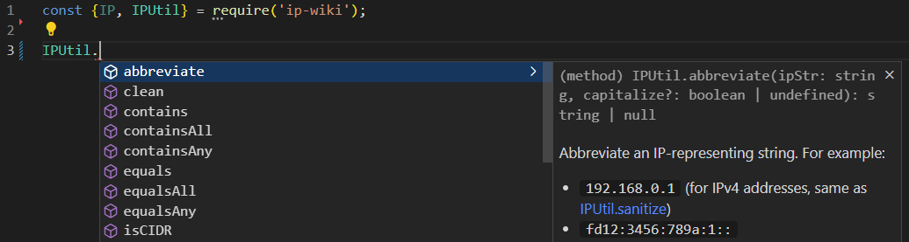
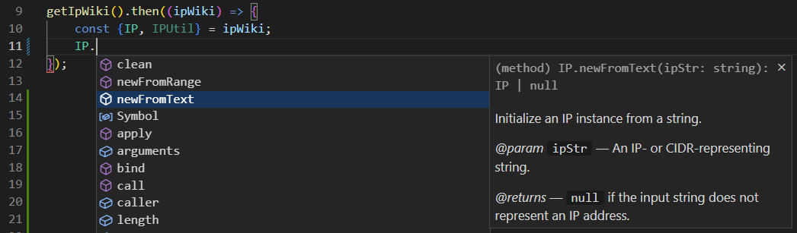

ip-wiki — IP Address Utility Library for Wikipedia and NodeJS[!NOTE] This module has yet to be published. Please wait for version 1.x.x to get ready.
ip-wiki is a JavaScript library written in ES6 that provides classes to manipulate IP and CIDR addresses. The library has been developed for use on Wikipedia, but it also works as a NodeJS module.
npm install ip-wiki
If you only need type definitions:
npm install -D ip-wiki
In CommonJS:
const {IP, IPUtil} = require('ip-wiki');
In ES modules:
import {IP, IPUtil} from 'ip-wiki';
Then:

Load and import ja:MediaWiki:Gadget-ip-wiki.js. In this case, this package is for Intellisense (you may also want to install types-mediawiki as a dev dependency).
/**
* @returns {JQueryPromise<import('ip-wiki')>}
*/
function getIpWiki() {
const gadget = 'ext.gadget.ip-wiki';
return mw.loader.using(gadget).then((req) => req(gadget));
}
getIpWiki().then((ipWiki) => {
const {IP, IPUtil} = ipWiki;
// ...
});
Note that you may need to cross-wiki-load the gadget if a module named ip-wiki is not defined in the local Gadgets-deinition:
/**
* @returns {JQueryPromise<import('ip-wiki')>}
*/
function getIpWikiX() {
const gadget = 'ext.gadget.ip-wiki';
return mw.loader.getScript('https://ja.wikipedia.org/w/load.php?modules=' + gadget).then(() => {
return mw.loader.using(gadget).then((req) => req(gadget));
});
}
Then:

This library has two main classes: the IP class and the static IPUtil class:
Suppose that you need to retrieve the indexes of IP-representing elements in ipArr array that equal the IP address 192.168.1.1:
const ip = IP.newFromText('192.168.1.1');
if (!ip) {
return;
}
const ipArr = [
'192.168.1.1/32',
'::1',
'192.168.001.001'
];
const indexes = ipArr.reduce(/** @param {number[]} acc */ (acc, ipStr, i) => {
if (ip.equals(ipStr)) {
acc.push(i);
}
return acc;
}, []);
console.log(indexes); // [ 0, 2 ]
Suppose that you need to filter the ipArr array for it to only contain IPv6 addresses and CIDRs:
const ipArr = [
'192.168.1.1/32',
'::1',
'192.168.001.001'
];
const filtered = ipArr.filter((ip) => IPUtil.isIPv6(ip, true));
console.log(filtered); // [ '::1' ]
For a number of other methods, see the API documentation!